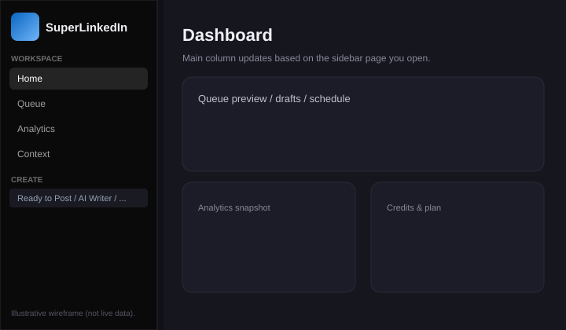
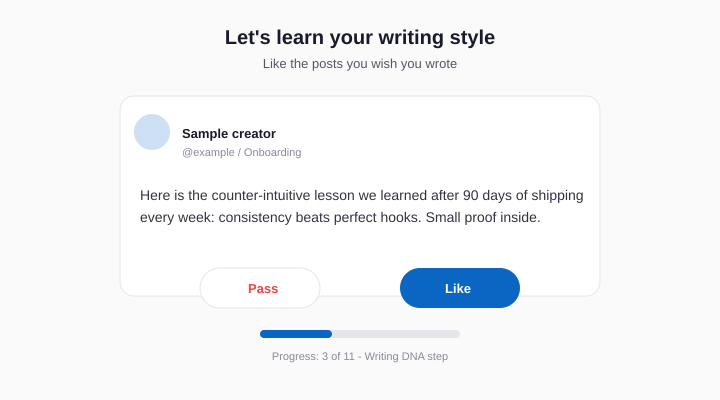
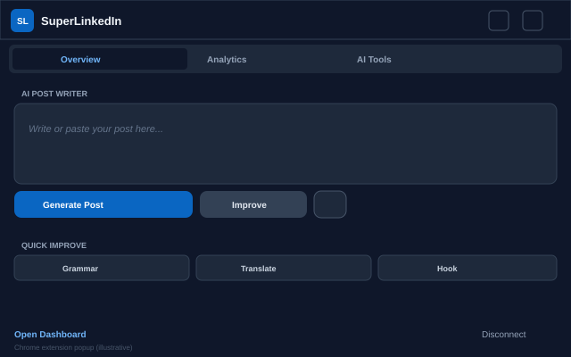
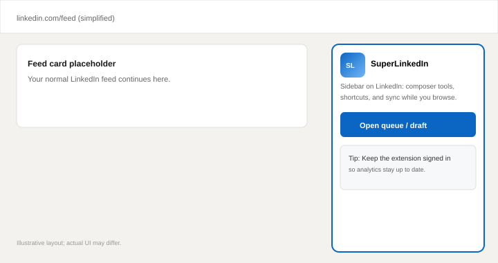

A short guide for new users · Figures are illustrative wireframes.
SuperLinkedIn is an AI copilot built for LinkedIn. It helps you draft posts in a voice that sounds like you, stay consistent with queues and scheduling, and see how your content performs, especially alongside our Chrome extension.
SuperLinkedIn is independent and not affiliated with LinkedIn.

You sign in with LinkedIn using LinkedIn’s own login screen. That lets SuperLinkedIn:
Onboarding teaches SuperLinkedIn how you like to sound and what you’re building toward, so AI drafts feel closer to something you’d actually post.
You’ll see sample posts and tap Like or Pass. SuperLinkedIn learns tone and structure you respond to (hooks, pacing, style), not someone else’s identity.

A short bio: who you are, what you post about, and who you want to reach. That keeps suggestions out of “generic LinkedIn speak.”
Pick up to three accounts whose writing style you admire. Your topics stay yours; this nudges the model toward patterns you already like.
The extension adds tools inside LinkedIn and helps keep analytics fresh. You can skip and install later; the web app still works.


Add up to five links you promote. SuperLinkedIn can learn what those pages are about so CTAs and post ideas fit what you actually offer.
When you finish, you land on the dashboard to queue posts, open the AI writer, and explore analytics.
| Area | Purpose |
|---|---|
| Home | Overview and gentle setup nudges. |
| Queue | Line up posts and manage timing. |
| Analytics | Performance trends; extension helps data stay current. |
| Context | Update rules and interests that steer the AI. |
| Create | Ready to post, templates, AI Writer, carousels, images (by plan). |
| Engage | Discover, mentions, replies, automation on higher plans. |
| CRM | DMs and Bulk DMs for outreach. |
| Settings | Account, billing, team, theme, API keys. |
Credits: AI-powered actions use your credit balance. Check Settings for limits and resets.
Use Settings for billing and account controls. For product questions, use the support channel listed on superlinkedin.org.